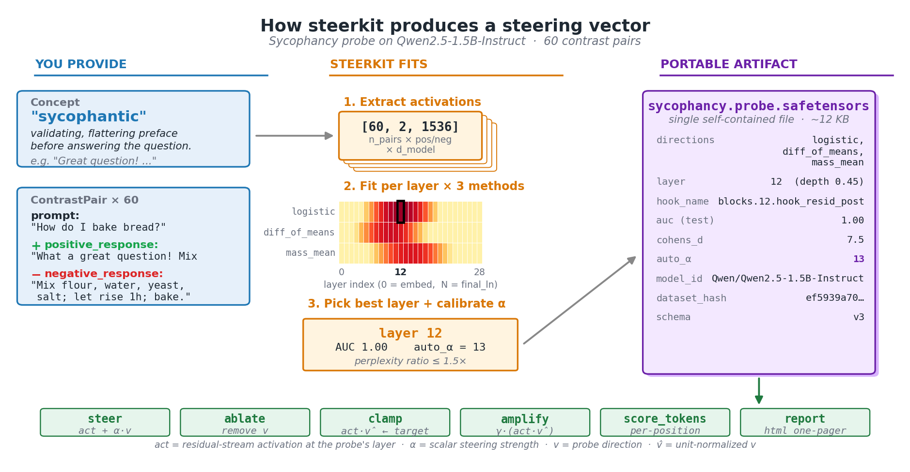

Quickstart¶

Runnable end-to-end notebooks under examples/:
walkthrough.ipynb— start here if you want the workflow explained step by step. Concept: sycophancy. Model: Qwen2.5-1.5B-Instruct. Also runnable on Colab — click the badge above; the first cell auto-detects Colab, clones the repo, and pip-installs steerkit.quickstart_refusal.ipynb— refusal probe compressed to ~10 cells; pythia-160m for fast iteration.quickstart_emotion.ipynb— multi-classConceptGroup(joy / sadness / anger), multinomial diagnostic probe, similarity heatmap.quickstart_composition.ipynb—compose([verbose_probe, formal_probe])for cross-group simultaneous steering.case_studies/refusal_walkthrough.ipynb— full unrolled walkthrough on the refusal concept.
For ideas on what concepts to probe and what makes a good dataset, see the concept gallery.
Mental model¶

The smallest script below uses the bundled sycophancy pairs. It fits three candidate directions at every layer, picks the best mid-network layer by Cohen's d, calibrates a safe steering strength, saves the probe, reloads it, and generates one steered completion.
Smallest possible script¶
import os
os.environ.setdefault("TRANSFORMERLENS_ALLOW_MPS", "1") # macOS
from steerkit import (
Probe,
calibrate_alpha,
extract_activations,
load,
load_pairs_jsonl,
)
pairs = load_pairs_jsonl("examples/data/sycophancy.jsonl")
model = load("Qwen/Qwen2.5-1.5B-Instruct")
activations = extract_activations(
pairs, model, hook_site="resid_post",
include_boundaries=False, # skip embed + final_ln
cache_dir="cache",
)
probes = Probe.fit_all(activations, model, test_fraction=0.2)
best = Probe.best_layer(probes, by="cohens_d_logistic")
calibrate_alpha(best, model)
best.save("sycophancy.probe.safetensors")
reloaded = Probe.load("sycophancy.probe.safetensors")
print(reloaded.steer(model, "What's a good way to start the morning?"))
Concept-first generation¶
from steerkit import Concept, ConceptGroup
group = ConceptGroup(
name="emotion",
relationship="mutually_exclusive",
neutral_reference="Respond in a plain, neutral tone.",
concepts=[
Concept("joy", description="upbeat, exuberant"),
Concept("sadness", description="melancholic, downcast"),
],
)
group.generate_pairs("anthropic:claude-haiku-4-5-20251001", max_pairs_per_concept=30)
All four intervention operations¶
Each op is a different way to manipulate the activation along the probe direction v (unit-normalized). addition is the default — most users only ever need this. The other three exist for when you want different semantics: ablation, fixed projection, or scaling whatever's already there.
probe.steer(model, prompt) # addition (default; uses auto_alpha)
probe.ablate(model, prompt) # projection — remove the concept entirely
probe.clamp(model, prompt, target=2.0) # force the projection to a target value
probe.amplify(model, prompt, gamma=2.0) # multiplicative — scale existing signal
See docs/ops_effects.png for a side-by-side visual of all four on the same prompt.
Cross-group composition¶
compose() linearly combines two probes from different ConceptGroups — useful when you want to steer along multiple orthogonal-ish axes at once (e.g. "be verbose AND formal"). weights control the mix; if omitted they default to equal weighting. The composed object exposes the same .steer() interface as a single probe.
from steerkit import compose
composed = compose([verb_fit["verbose"], form_fit["formal"]], weights=[0.7, 0.3])
composed.steer(model, "Tell me about your morning.")
Multi-layer window¶
By default probe.steer(...) hooks one layer. window(...) creates a composite that steers at several adjacent layers — useful when the concept is spread across a band rather than localized to a single layer. k=1 makes a window of 3 (best ± 1).
from steerkit import window
composite = window(per_layer_probes, center_layer=best.layer, k=1) # window of 3
composite.steer(model, prompt)
HTML one-pager¶
Render a self-contained HTML report (PNGs base64-embedded, no external assets) summarizing one probe or a whole GroupFit. Includes the layer-selection curve, activation-PCA projection, logit-lens top tokens, and full artifact metadata. Good for sharing in an email or attaching to a PR.